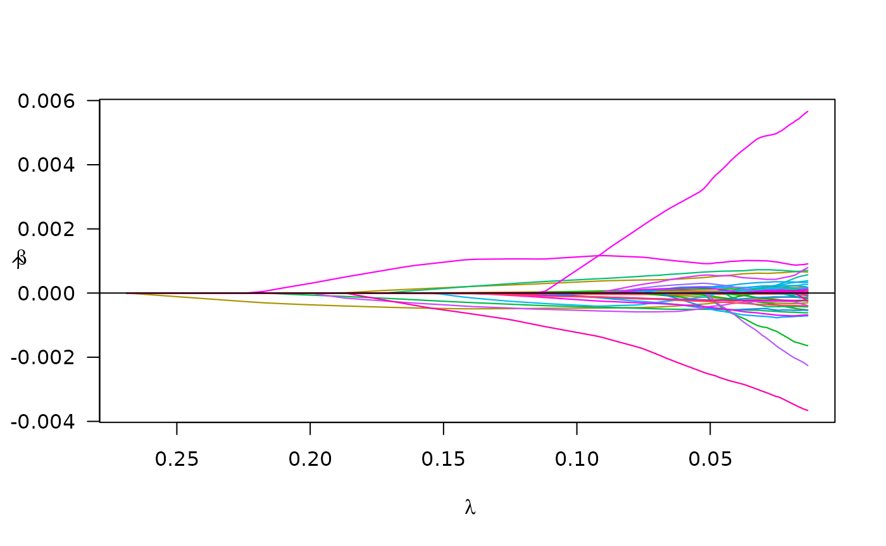

If your data is in (a) delimited file(s)
delim_files.Rmd
library(plmmr)
#> Loading required package: bigalgebra
#> Loading required package: bigmemoryIf you have data stored as a delimited file (e.g., a
.txt file), this is the place for you to begin. To analyze
such data, there is a 3-step procedure: (1) process the data, (2) create
a design, and (3) fit a model.
Process the data
# I will create the processed data files in a temporary directory;
# fill in the `rds_dir` argument with the directory of your choice
temp_dir <- tempdir()
colon_dat <- process_delim(data_file = "colon2.txt",
data_dir = find_example_data(parent = TRUE),
rds_dir = temp_dir,
rds_prefix = "processed_colon2",
sep = "\t",
overwrite = TRUE,
header = TRUE)
#> There are 62 observations and 2001 features in the specified data files.
#> At this time, plmmr::process_delim() does not not handle missing values in delimited data.
#> Please make sure you have addressed missingness before you proceed.
#>
#> process_plink() completed
#> Processed files now saved as /tmp/RtmpoBXsgH/processed_colon2.rdsThe output messages indicate that the data has been processed. This
call created 2 files, one .rds file and a corresponding
.bk file. The .bk file is a special type of
binary file that can be used to store large data sets. The
.rds file contains a pointer to the .bk file,
along with other meta-data.
Note that what is returned by process_delim() is a
character string with a filepath: .
Create a design
Creating a design ensures that data are in a uniform format prior to
analysis. For delimited files, there are two main processes happening in
create_design(): (1) standardization of the columns and (2)
the construction of the penalty factor vector. Standardization of the
columns ensures that all features are evaluated in the model on a
uniform scale; this is done by transforming each column of the design
matrix to have a mean of 0 and a variance of 1. The penalty factor
vector is an indicator vector in which a 0 represents a feature that
will always be in the model – such a feature is unpenalized. To
specify columns that you want to be unpenalized, use the ‘unpen’
argument. Below in our example, I am choosing to make ‘sex’ an
unpenalized covariate.
A side note on unpenalized covariates: for delimited file data, all
features that you want to include in the model – both the penalized and
unpenalized features – must be included in your delimited file. This
differs from how PLINK file data are analyzed; look at the
create_design() documentation details for examples.
# prepare outcome data
colon_outcome <- read.delim(find_example_data(path = "colon2_outcome.txt"))
# create a design
colon_design <- create_design(data_file = colon_dat,
rds_dir = temp_dir,
new_file = "std_colon2",
add_outcome = colon_outcome,
outcome_id = "ID",
outcome_col = "y",
unpen = "sex", # this will keep 'sex' in the final model
logfile = "colon_design")
#> No feature_id supplied; will assume data X are in same row-order as add_outcome.
#> There are 0 constant features in the data
#> Subsetting data to exclude constant features (e.g., monomorphic SNPs)
#> Column-standardizing the design matrix...
#> Standardization completed at 2024-09-23 18:34:26
#> Done with standardization. File formatting in progressAs with process_delim(), the
create_design() function returns a filepath: . The output
messages document the steps in the create design procedure, and these
messages are saved to the text file colon_design.log in the
rds_dir folder.
For didactic purposes, we can look at the design:
# look at the results
colon_rds <- readRDS(colon_design)
str(colon_rds)
#> List of 17
#> $ X_colnames : chr [1:2001] "sex" "Hsa.3004" "Hsa.13491" "Hsa.13491.1" ...
#> $ X_rownames : chr [1:62] "row1" "row2" "row3" "row4" ...
#> $ n : num 62
#> $ p : num 2001
#> $ outcome_idx : int [1:62] 1 2 3 4 5 6 7 8 9 10 ...
#> $ y : int [1:62] 1 0 1 0 1 0 1 0 1 0 ...
#> $ std_X_rownames: chr [1:62] "row1" "row2" "row3" "row4" ...
#> $ unpen : int 1
#> $ unpen_colnames: chr "sex"
#> $ ns : int [1:2001] 1 2 3 4 5 6 7 8 9 10 ...
#> $ std_X_colnames: chr [1:2001] "sex" "Hsa.3004" "Hsa.13491" "Hsa.13491.1" ...
#> $ std_X :Formal class 'big.matrix.descriptor' [package "bigmemory"] with 1 slot
#> .. ..@ description:List of 13
#> .. .. ..$ sharedType: chr "FileBacked"
#> .. .. ..$ filename : chr "std_colon2.bk"
#> .. .. ..$ dirname : chr "/tmp/RtmpoBXsgH/"
#> .. .. ..$ totalRows : int 62
#> .. .. ..$ totalCols : int 2001
#> .. .. ..$ rowOffset : num [1:2] 0 62
#> .. .. ..$ colOffset : num [1:2] 0 2001
#> .. .. ..$ nrow : num 62
#> .. .. ..$ ncol : num 2001
#> .. .. ..$ rowNames : NULL
#> .. .. ..$ colNames : chr [1:2001] "sex" "Hsa.3004" "Hsa.13491" "Hsa.13491.1" ...
#> .. .. ..$ type : chr "double"
#> .. .. ..$ separated : logi FALSE
#> $ std_X_n : num 62
#> $ std_X_p : num 2001
#> $ std_X_center : num [1:2001] 1.47 7015.79 4966.96 4094.73 3987.79 ...
#> $ std_X_scale : num [1:2001] 0.499 3067.926 2171.166 1803.359 2002.738 ...
#> $ penalty_factor: num [1:2001] 0 1 1 1 1 1 1 1 1 1 ...
#> - attr(*, "class")= chr "plmm_design"Fit a model
We fit a model using our design as follows:
colon_fit <- plmm(design = colon_design, return_fit = TRUE, trace = TRUE)
#> Note: The design matrix is being returned as a file-backed big.matrix object -- see bigmemory::big.matrix() documentation for details.
#> Reminder: the X that is returned here is column-standardized
#> Input data passed all checks at 2024-09-23 18:34:26
#> Starting decomposition.
#> Calculating the eigendecomposition of K
#> Eigendecomposition finished at 2024-09-23 18:34:26
#> Beginning rotation ('preconditioning').
#> Rotation (preconditiong) finished at 2024-09-23 18:34:27
#> Setting up lambda/preparing for model fitting.
#> Beginning model fitting.
#> Model fitting finished at 2024-09-23 18:34:27
#> Beta values are estimated -- almost done!
#> Formatting results (backtransforming coefs. to original scale).
#> Model ready at 2024-09-23 18:34:27Notice the messages that are printed out – this documentation may be
optionally saved to another .log file using the
logfile argument.
We can examine the results at a specific value:
summary(colon_fit, idx = 50)
#> lasso-penalized regression model with n=62, p=2003 at lambda=0.0594
#> -------------------------------------------------
#> The model converged
#> -------------------------------------------------
#> # of non-zero coefficients: 30
#> -------------------------------------------------We may also plot of the paths of the estimated coefficients:
plot(colon_fit)